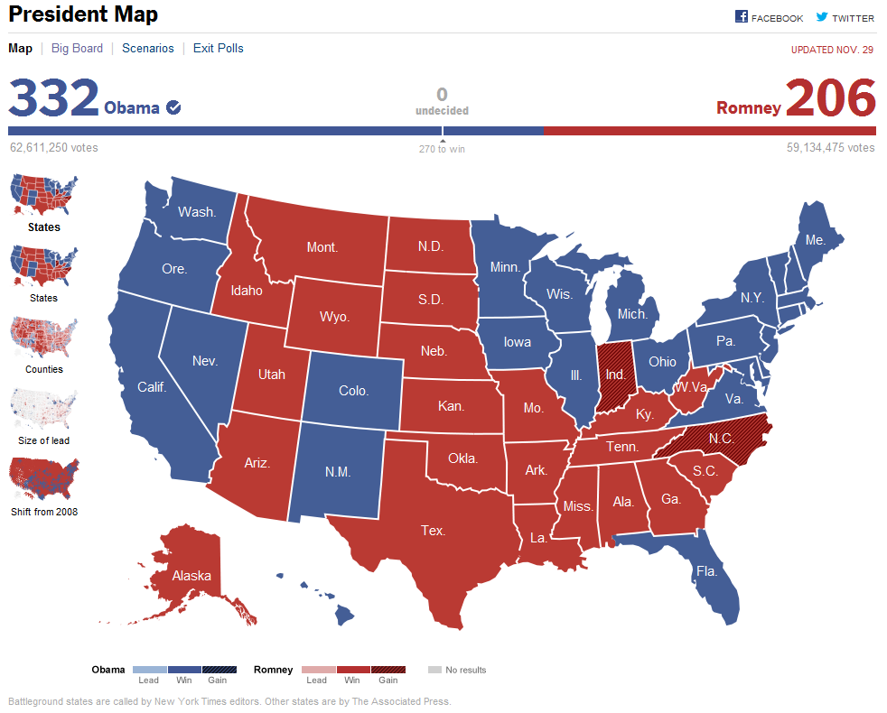

Web Mapping
Summer semester 2013
Usability
What is usability
We should make user interface design in the way that user can concentrate on work, explore and pleasure himself. Usability is quality of user experience when using a system.
Usability could be divided into three categories: effectiveness, efficiency and satisfaction.
When the user interface is designed well he would spend more time with your application.
We can test usability by effectiveness (if user can finish his task), efficiency (if the search was fast and easy), error frequency and memorability (if user can memorize how he finished the task)
Exploring usability
I compared two different map services delivering results of the American presidential election in 2012.
The New York Times- Positives aspects
- User can immediately see the map content with nice legend.
- On the left side of the map there is a bar with other possibilities of displaying the map.
- User can chose directly on the main page if he is interested in countries or counties and the map is quickly zoomed in.
- There is a map showing the voting shift from 2008.
- Interaction with the map is fast and pleasant.
- Negative aspects
- We cannot move with the map when it is zoomed into counties.
- Data for country of Alaska are missing.

The Huffington Post
- Positives aspects
- User can immediately see the map content with nice legend.
- There are detailed graphs comparing the results from 2008 and 2012.
- If we click on chosen country we get additional informative text.
- Negative aspects
- User has to scroll down the page for additional tables and charts with further information.
- When user clicks on a country he is directed to new subpage with further information, but it tends to be little bit tedious.
- Interaction with the map is slow and sometimes little bit confusing.
- Sometimes the legibility could be better and there are some heading overlapped with other boxes.